도시계획기사 (2005-09-04 기출문제)
1과목: 도시계획론
1. 18, 19세기에 제안된 유토피안 계획가들의 이상도시안에 대한 설명으로 올바른 것은?
- Claude Nicholas Ledoux - 무정형의 도시대신에 단일건물 팔란스테르(Phalanstere)를 제안
- Francois Fourier - 아름다움, 건강, 편리를 우선하여 근대건축기술이나 과학적 진보를 적극적으로 도입
- Robert Owen - 농업과 공업을 결합한 이상 공장촌의 건설을 제안
- James. S. Buckingham - 18세기 후반에 제영노동자들의 이상도시 쇼(Chaux)를 발표하여 새로운 생산체제를 도입
(정답률: 알수없음)

2. 도시의 특징을 설명한 것 중 틀린 것은?
- 도시는 일정한 지역에 정주(定住) 인구가 집중하여 인구밀도가 높은 것이 특징이다.
- 도시는 1차 산업보다 2, 3차 산업의 구성비율이 높다.
- 도시는 분화된 기능이 집적되어 있으며 행정적, 물리적, 인공적인 생활시설이 많다.
- 도시는 단순한 경제적 활동을 추구한다.
(정답률: 알수없음)
3. 도시정부 공기업의 한가지 유형으로 볼 수 있는 제 3섹터(sector)란 다음 중 무엇인가?
- 자치단체와 개인의 결합
- 자치단체와 기업의 결합
- 기업과 개인의 결합
- 자치단체와 공사의 결합
(정답률: 알수없음)
4. 도시 공공 서비스가 광역 행정화 되는 주된 이유가 아닌 것은?
- 교통과 통신의 발달로 인한 공간거리의 상대적 축소
- 공공시설의 투자와 편리의 중복으로 인한 비효율성 노출
- 대도시권내에서 기능 분화로 인한 권역내 자치단체의 재정적 불균형 초래
- 단일 권역내에서의 통합적 관리의 발달
(정답률: 알수없음)
5. 도시병리현상(urban pathology)에 대한 설명으로 적합하지 않은 것은?
- 합리주의에 의한 냉혹한 산업인들사이의 경쟁에서 비롯되는 낙후자, 패배자의 사회처리문제
- 새로운 사회가치관과 기술개발에 따른 생활수단의 변화에 적응하지 못하는 사람들의 갈등
- 고도화된 기계문명에 의한 인간성 배제에서 나오는 비인간성
- 환경보존론자들의 각종 개발에 반발로 인한 성장 제동
(정답률: 알수없음)
6. 개발권 양도제 TDR(Transfer of Development Right)에 관한 설명으로 적절하지 않은 것은?
- 토지의 소유권과 개발권을 구분하여 거래한다.
- 토지를 소유하지 않은 주민이 유리하다.
- 개발할 토지총량의 한도내에서 개발권을 부여한다.
- 송출지역과 수용지역간 개발이익을 분배한다.
(정답률: 알수없음)
7. 사회적 도시시설에 관계 깊은 것은?
- 도시상부 구조로서 교통체계를 위한 시설
- 학술적 연구시설
- 의료, 보건, 교육, 양로원, 탁아소시설
- 여가, 휴양, 산업적인 생산시설
(정답률: 알수없음)
8. Leo Klassen 교수가 제시한 도시화의 3단계로 가장 적당한 것은?
- 협의의 도시화→교외화→역도시화
- 협의의 도시화→광역도시화→역도시화
- 도시의 발생→협의의 도시화→광역도시화
- 도시의 발생→협의의 도시화→교외화
(정답률: 알수없음)
9. 동양의 이상적인 도시계획의 원칙을 제시한 주례고공기(周禮考工紀)에 포함된 내용이 아닌 것은?
- 수도는 사방으로 정방형이어야 하며, 성벽으로 둘러싸야 한다.
- 남북대로의 좌측(동쪽)에는 자신을 위한 사직을, 우측(서쪽)에는 왕의 조상을 위한 종묘를 만들어야 한다.
- 각 방위마다 3개의 성문을 두어 모두 12개의 성물을 내며, 성내에는 중정을 배치한다.
- 성 뒤쪽에는 시장을 두고, 성의 앞쪽에는 관청거리를 만들어야 한다.
(정답률: 알수없음)
10. 도시행정수요(都市行政需要)의 증대와 관계가 가장 깊은 것은?
- 도시기능분화와 집적 불이익
- 도시규모의 쇠퇴
- 도시경제 활동의 입지변화
- 국가경쟁력제고
(정답률: 알수없음)
11. 도시 공간구조와 성장이론의 주창자 또는 대표적인 연구자의 연결이 잘못된 것은?
- 중심지이론-크리스탈러, 베리
- 다핵심이론-해리스, 울만
- 원심력ㆍ구심력이론-디킨슨
- 다차원론-시몬스
(정답률: 알수없음)
12. 다음 중에서 용도별 건축물의 분류상 공동주택에 해당되는 것은?
- 다가구주택
- 다세대주택
- 다중주택
- 공관
(정답률: 알수없음)
13. 도시공간 구조이론 중 도시공간이 교통로나 도로를 따라 부채꼴 모양으로 발전하다고 보는 이론은?
- 다핵심이론
- 선형이론
- 동심원이론
- 3지대론
(정답률: 알수없음)
14. 1902년 발표한 아디케스(Lex Adickes)법의 목적에 알맞은 설명은?
- 시당국이 인간의 토지를 시의 계획에 맞추어 계획한 후 재 배분하는 토지구획정리법
- 시민들이 합동으로 토지를 개발하여 이익을 배분하는 합동단지개발법
- 불량한 주택지나 상업지를 새로운 기능으로 개발하는 재개발법
- 직주근접을 위한 신도시개발법
(정답률: 알수없음)
15. 다음 중 도시 공공시설에 해당되지 않는 것은?
- 구거
- 방음시설
- 사방설비
- 행정청이 설치한 저수지
(정답률: 알수없음)
16. 도시공공시설의 입지를 설명할 때 수요자의 이동거리를 최소화시키는 원칙은?
- 평균거리의 원칙
- 중앙입지의 원칙
- 중심극한정리
- 시청이 입지한 지역
(정답률: 알수없음)
17. CBD의 정의로 가장 적합한 것은?
- 인구밀도가 가장 높은 지역
- 도시의 중추관리 기능이 집약된 지역
- 도시의 지리적 중심지역
- 시청이 입지한 지역
(정답률: 알수없음)
18. 크리스탈러의 중심지 이론에 의하면 도시는 가지 원리에 따라 작은 중심지에서 큰 중심지로 확대되어 나간다고 한다. 이 원리에 해당되지 않는 것은?
- 시장의 원리
- 주거의 원리
- 교통의 원리
- 행정의 원리
(정답률: 알수없음)
19. 다음 보기와 같은 여건을 갖춘 도시의 기반산업이 5년 후 2배로 성장한다면, 도시의 경제는 얼마나 성장하는가?
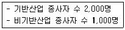
- 1.0배
- 2배
- 3배
- 4배
(정답률: 알수없음)
20. 개별필지의 개발을 억제하고 단일주체개발에 의한 대가구개발(super block devetopment)을 유도하는 토지개발방식은?
- 계획단위개발
- 토지구획정리사업
- 대지합분규제
- 개발권양여
(정답률: 알수없음)
2과목: 도시설계 및 단지계획
21. 다음 중 공업단지의 입지요건과 거리가 먼 것은?
- 공급가격의 수준이 적정한 지역
- 지역환경 및 문화재 피해가 적은 지역
- 근로자 주택 및 배후도시 여건이 좋은 지역
- 파사드가 단조롭지 않은 지역
(정답률: 알수없음)
22. 도시계획 시설에서 소로 2류의 도로폭으로 가장 적당한 것은?
- 폭 4m 이상 6m 미만
- 폭 6m 이상 8m 미만
- 폭 8m 이상 10m 미만
- 폭 10m 이상 12m 미만
(정답률: 알수없음)
23. 린치(Kevin Lynch)는 외부공간의 크기와 비례로서 공간의 특성을 설명하고 있다. 사람의 얼굴을 명확하게 알아볼 수 있는 거리는?
- 약 3m
- 약 15m
- 약 20m
- 약 25m
(정답률: 알수없음)
24. 다음 중 구획도로망의 구성형식에 관한 설명 중 틀린 것은?
- 격자형-도로의 위계가 불명확하고, 통과교통이 허용되어 안전성이 떨어진다.
- 티(T)자형-격자형에 비하여 주행속도가 낮고, 단조로운 기구가 형성된다.
- 루프형-가구내부에 주민에게 독점적으로 활용되는 쾌적한 도로공간이 형성된다.
- 골데삭형-구획도로와 별도로 보행자전용도로를 설치할 수 없으나 부정형한 지형에는 적용하기 용이하다.
(정답률: 알수없음)
25. 보조 간선도로 개략 시설기준에 관련된 서술 중 옳지 않은 것은?
- 평균통행거리는 약 5km 미만으로 한다.
- 유ㆍ출입지정간 평균간격은 500m 정도로 한다.
- 동일기능 도로 간의 간격은 1,500m 정도로 한다.
- 최소 교차로의 간격은 500~1,000m 정도로 한다.
(정답률: 알수없음)
26. 아파트 단지 계획시 건축물의 특정한 층에서 벽면의 위치가 넘어서는 안 되는 선으로 보행공간의 확보 등이 필요한 경우에 지정하는 지구단위계획의 요소는?
- 건축지정선
- 벽면지정선
- 벽면한계선
- 건축한계선
(정답률: 알수없음)
27. 다음 중 집략(cluster)형태의 주택배치하고 볼 수 있는 것은?
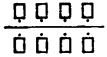
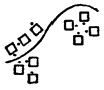
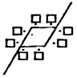
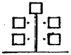
(정답률: 알수없음)
28. 기단부의 옥상은 오픈스페이스로 활용할 수 있으며, 신개발지의 대규모 쇼핑타운에 적합한 복합용도 건축물 형태의 유형은?
- 단순수직 중첩형
- 병렬 연결형
- 독립 분리형
- 플랫폼형
(정답률: 알수없음)
29. 다음 중 경관분석기법이 아닌 것은?
- 사진에 의한 방법
- 메쉬(mesh)에 의한 방법
- 기호화 방법
- 군락측도방법
(정답률: 알수없음)
30. 다음의 도시계획시설 사업 중 지반교통영향심의위원회 심의 대상의 기준으로 거리가 먼 것은?
- 도로의 총길이 5km 이상 신설노선 중 인터체인지ㆍ교차부분
- 유통업무설비 건축면면적 1만 5천m2 이상
- 공원 부지면적 30m2 이상
- 유원지 부지면적 30m2 이상
(정답률: 알수없음)
31. 1/50,000 지도 위에 20m 간격의 등고선이 그려져 있고, 5줄 마다 계곡선(굵은 줄)이 들어있다. 어떤 사면의 경사를 알기 위해 계곡선간의 수평거리를 재어 본 결과 1.2cm였다. 이 사면의 평균 구배는?
- 약 3.3%
- 약 12%
- 약 17%
- 약 20%
(정답률: 알수없음)
32. 주차수요를 추정하는 방법 중 주차발생원단위법에 의한 계산식의 용어설명이 틀린 것은?
- P : 주차수요(대)
- U : 첨두시 용도별 주차발생량(대/1,000m2ㆍ시간)
- F : 장래 계획 건물연면적(1,000m2)
- e : 건물이용자 중 승용차 이용율(%)
(정답률: 알수없음)
33. 준주거지역에 건폐율 6/10, 용적율 550%를 적용할 경우 최대층수는?
- 3층
- 5층
- 9층
- 14층
(정답률: 알수없음)
34. 다음은 C.A. Perry의 근린주구개념이다. 이 중 옳지 않은 것은?
- 크기는 초등학교 1개교를 유치할 수 있는 인구가 적당하다.
- 단지는 간선도로로서 경계되어 둘러싸여야 한다.
- 지구내의 점포는 단지의 중심에 집중해야 한다.
- 내부교통은 단지내에서 원활하도록 하고 통과교통에 사용되지 않도록 한다.
(정답률: 알수없음)
35. 도시개발법에 의한 도시계획구역안에서 공업단지로 조성할 경우 법적으로 필요한 최소면적 규모는?
- 10,000m2 이상
- 2,000m2 이상
- 3,000m2 이상
- 5,000m2 이상
(정답률: 알수없음)
36. 가로에 면한 건물의 주용도가 사람들과의 접촉이 자주 일어날 수 있도록 하기 위해 상업, 업무단지의 획지 계획시 건물과의 관계에서 무엇을 가장 중요시해야 하는가?
- 융통성
- 전면성
- 적정성
- 방향성
(정답률: 알수없음)
37. 다음 중 복합용도개발(Mixed-Use Development)의 장점에 대한 설명으로 적합하지 못한 것은?
- 도심지에 주거기능을 도입함으로써 도심공동화를 방지하고 도시에 활력소를 불어 넣을 수 있다.
- 직주근접(直走近接)을 실현함으로써 교통혼잡에 따른 사회적 비용을 줄일 수 있다.
- 도심지역 중 저밀도로 이용되고 있는 지역을 재개발함으로써 토지이용의 효율성을 제고할 수 있다.
- 동일건물내에서 주거기능 보호를 위한 별도의 완충공간이나 진출입 동선의 분리 등이 불필요하여 환경계획의 단순화가 가능하다.
(정답률: 알수없음)
38. 단지계획에서 비용을 줄이기 위한 일반적인 원칙에 속하지 않는 것은?
- 이동경로의 길이를 최소한으로 줄인다.
- 간선과 지선을 구별해서 가로를 배치한다.
- 완만한 구배와 완만한 커브(curve)만을 갖도록 가로를 배치한다.
- 가구(街區)의 크기를 소형으로 한다.
(정답률: 알수없음)
39. 획지(lot)내의 주택배치 방식중 집합식(集合式, siedlung)을 사용한 나라로 맞는 것은?
- 영국
- 독일
- 미국
- 프랑스
(정답률: 알수없음)
40. 도시공원의 분류에 해당하지 않는 것은?
- 체육공원
- 소공원
- 근린공원
- 어린이공원
(정답률: 알수없음)
3과목: 도시개발론
41. 직육면체인 저수탱크의 용적을 구하고자 한다. 밑변 a, b와 높이 h에 대한 측정결과가 다음과 같을 때 부피오차는?
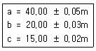
- ±10m3
- ±21m3
- ±28m3
- ±34m3
(정답률: 알수없음)
42. 그림과 같이 삼각측량을 실시하였다. 이때 P점의 좌표는 어느 것인가? (단, Ax=81.847m, Ay=30.460m, θAB = 163° 20' 00", ∠BAP = 60°,
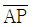
= 600.00m)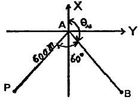
- Px = -354.577m, Py = -442.2⑤m
- Px = -466.884m, Py = -329.898m
- Px = -466.884m, Py = -442.2⑤m
- Px = -354.577m, Py = -329.898m
(정답률: 알수없음)
43. 지형공간정보체계(GSIS)의 자료수집 단계에 관련된 일반적인 설명으로 옳지 않은 것은?
- 수집자료의 정확도는 이후에 처리 및 분석단계에서 향상되므로 정확도에 상관없이 많은 자료를 얻는 것이 중요하다.
- GSIS 사업 전체 비용에 많은 부분이 소요되는 중요한 사업이다.
- 국내의 경우 기존 자료가 미비하므로 자료들을 신규 제작하여야 하는 경우가 많아 비용이 많이 소요되는 단계가 된다.
- GSIS에서 공통적으로 이용되는 자료들은 가급적 국가적사업에 의해 표준적으로 제작하는 것이 좋다.
(정답률: 알수없음)
44. 축척이 1/50000 지형도 상에서 두점간의 거리가 8.13cm일 때 축척이 다른 지형도에서 이 두점간의 거리가 52.65cm이었다면 이 지형도의 축척은?
- 약 1/77
- 약 1/770
- 약 1/2200
- 약 1/77000
(정답률: 알수없음)
45. 지형공간정보체계(GSIS)에 대한 특징으로 옳은 것은?
- 위치정보와 속성정보를 분리하여 저장관리 하므로 시스템 운영이 비효율적이다.
- 점, 선, 면으로 표시되는 공간적 정보를 다양한 목적형태로 분석, 처리할 수 있는 시스템이다.
- 위성영상자료나 센서스 조사자료로는 사용할 수 없다.
- 중복분석이나 통계분석이 어려워 의사결정수단으로 이용될 수 없다.
(정답률: 알수없음)
46. 평균거리 2km에 대한 삼각측량에서 시준점의 편심에 대한 영향이 11-일 경우에 이에 의한 편심거리는?
- 약 0.11m
- 약 0.22m
- 약 0.42m
- 약 0.81m
(정답률: 알수없음)
47. 다음 삼각측량의 작업순서를 옳은 순서대로 배열된 것은?
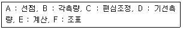
- A-B-C-D-E-F
- A-C-F-B-E-D
- A-F-E-D-C-B
- A-F-D-B-C-E
(정답률: 알수없음)
48. 다음 그림과 같은 결합트래버스 측량의 측각오차식으로 옳은 것은? (단, n은 변의 수, [α]는 측정각의 합)
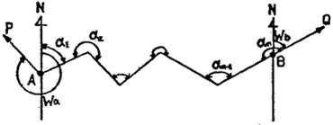
- △α=Wa-Wb+[α]-1480°(n-1)
- △α=Wa-Wb+[α]-1480°(n+1)
- △α=Wa-Wb+[α]-1480°(n-3)
- △α=Wa-Wb+[α]-1480°(n+1)
(정답률: 알수없음)
49. 30m에 대하여 6mm 늘어나 있는 줄자로 정방형의 지역을 측량한 결과 62500m2 이었다. 실제면적은?
- 62525m2
- 62500m2
- 62475m2
- 62550m2
(정답률: 알수없음)
50. 다음 중 대규모지역의 지형도 작성을 위한 세부측량에 가장 경제적으로 사용할 수 있는 측량방법은?
- 평판측량
- 수준측량
- 사진측량
- 천문측량
(정답률: 알수없음)
51. 지형공간정보체계에서 이용되는 격자형 자료의 압축방법 아닌 것은?
- 사슬부호(chain code)
- 연속분할부호(run-tength code)
- 블록부호(block code)
- 평면 부호(flat code)
(정답률: 알수없음)
52. P점의 표고를 구하기 위하여 수준점 A, B, C에서 고저측량을 실시하여 다음 표와 같은 결과를 얻었다. P점의 최확치는 얼마인가?
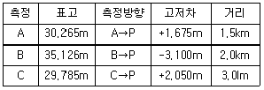
- 30.997m
- 31.725m
- 31.945m
- 31.325m
(정답률: 알수없음)
53. 거리측정에서 줄자로 1회 측정시 확률오차가 ±0.03m이라면 30m 줄자로 270m를 측정할 때 확률오차는?
- ±0.03m
- ±0.09m
- ±0.27m
- ±0.30m
(정답률: 알수없음)
54. 다음 중 일반적으로 오차론에서 다루는 오차는?
- 정오차
- 착오
- 우연오차
- 누차
(정답률: 알수없음)
55. 트래버스 측량에 의해서 높은 정확도를 요하는 기준점의 위치를 결정하는 가장 좋은 방법은?
- 삼각정에서 다른 삼각점에 결함하는 트래버어스
- 삼각정에서 동일 삼각점에 결함하는 트래버어스
- 점도가 높음 삼각점에서 출발하는 개방 트래버어스
- 임의 점에서 삼각점으로 결합되는 트래버어스
(정답률: 알수없음)
56. 측정이 갱도의 천장에 설치되어 있는 갱내 수준측량에서 다음 그림과 같은 수준측량 관측결과를 얻었다. A점의 지반고가 15.32m일 때 C점의 지반고는?
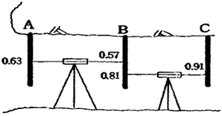
- 15.26m
- 15.36m
- 15.46m
- 15.56m
(정답률: 알수없음)
57. 하천이나 항만, 해안 등을 심천측량하여 측점 숫자를 기입하여 그 높이를 표시하는 방법은?
- 영선법
- 음영법
- 점고법
- 등고선법
(정답률: 알수없음)
58. 다음은 트래버스 측량에서 폐합오차를 분배하는 컴파스 법칙과 트랜싯 법칙을 설명한 것이다. 옳지 않은 것은?
- 컴파스 법칙은 거리의 정도와 각 관측의 정밀도가 같은 경우에 사용한다.
- 컴파스 법칙은 각 측선의 길이에 비례하여 배분하는 방법이다.
- 트랜싯 법칙은 거리의 오차를 평균 배분하는 방법이다.
- 트랜싯 법칙은 각 측량의 정밀도가 거리 측량의 정밀도보다 좋을 경우에 이용된다.
(정답률: 알수없음)
59. 평판측량에서 축척 1/1200의 도면을 작성할 때 도상의 점위치의 허용 오차를 0.2mm라 하면 측점의 중심맞추기 허용오차는?
- 120m
- 150m
- 200m
- 250m
(정답률: 알수없음)
60. 공간상에 나타난 연속적인 기본변화를 수치적으로 표현하는 방법을 무엇이라 하는가?
- DEM
- MOSS
- BIL
- CAD
(정답률: 알수없음)
4과목: 국토 및 지역계획
61. A도시와 B도시가 있다. Reilly의 공식을 이용하여 A도시로부터 분계점가지의 거리를 구하면 얼마가? (단, A도시의 도시인구 100,000인, B도시의 도시인구 900,000인, A도시와 B도시간의 거리는 200㎞)
- 30㎞
- 50㎞
- 70㎞
- 75㎞
(정답률: 알수없음)
62. 어느 지방정부에서 2년간의 수명을 가진 800억원의 투자사업으로부터 매년 말 484억원의 수입을 가져올 것으로 기대할 때 사업의 순현재가치는? (단 자금시장이율은 10%이다)
- 40억원
- 124억원
- 840억원
- 924억원
(정답률: 알수없음)
63. 지역계획의 집행은 세가지를 통하여 이루어지는데 다음 중 이 세가지에 속하지 않는 것은?
- 매년도 수입 지출의 견적서에 의한 예산안 마련
- 매년도 인원,자재의 자원배분을 위한 견적서 마련
- 필요한 제도 및 기구의 신설과 변경
- 전체 계획(종합계획 또는 청사진 계획)과 연계한 내용
(정답률: 알수없음)
64. 우리 나라의 국토 및 지역계획의 문제점으로 가장 거리가 먼 것은?
- 비전문가인 입안권자가 직접 입안하는 계획
- 계획입안기관의 독주성 및 형식성
- 관련 계획과의 연계적 체계성 결여
- 계획 결정까지 오랜시간 소요
(정답률: 알수없음)
65. 지역개발의 테크노폴리스전략은 첨단산업의 발전가능성이 성공의 주요한 요소이다. 첨단산업의 입지조건에서 일반적으로 가장 불리한 것은?
- 대규모 공업단지 소재 도시
- 국내외 항공기의 접근성
- 양호한 주거환경
- 대학 등의 연구기관
(정답률: 알수없음)
66. 성장거점개발전략이 추구하는 핵심개념으로 바르게 나열된 것은?
- 집적의 이익, 상향식 개발, 역류효과
- 집적의 이익, 상향식 개발, 파급효과
- 선도산업, 상향식 개발, 파급효과
- 선도산업, 집적의 이익, 파급효과
(정답률: 알수없음)
67. 도시관리계획결정은 규정에 의한 고시가 있는 날부터 얼마가 지난 후 그 효력이 발생하는가?
- 고시 다음 날
- 3일
- 5일
- 10일
(정답률: 알수없음)
68. 권역이라고 할 때 다음 지역 중 어느 지역과 가장 깊은 관계가 있는가?
- 동질지역
- 계획지역
- 분극지역
- 동일지역
(정답률: 알수없음)
69. 다음 중 가장 큰 규모의 공간단위는?
- 메갈로폴리스
- 메트로폴리스
- 인구밀집지역(DID)
- 표준대도시통계지역
(정답률: 알수없음)
70. 수도권 권역구분 및 지정의 기술로 바르지 않은 것은?
- 과밀억제권역 : 인구 및 산업이 과도하게 집중될 우려가 있어 이전 또는 정비가 필요한 지역
- 성장관리권역 : 과밀억제권역으로부터 이전하는 인구 및 산업을 계획적으로 유치하고 산업의 입지와 도시의 개발을 적정하게 관리할 필요가 있는 지역
- 자연보전권역 : 한강수계의 수질 및 녹지 등 자연환경의 보전이 필요한 지역
- 이전촉진지역 : 과밀억제권역으로부터 인구 및 산업을 계획적으로 유치하고 산업의 입지와 도시의 적정개발이 필요한 지역
(정답률: 알수없음)
71. 지역계획 수립과정에서 기업의 생산성을 높이기 위해 경쟁회사의 제도나 생산공정을 모방하여 자사에 맞도록 하는 제도를 활용하는 수법이 아닌 것은?
- 브레인스토밍(Brain storming)
- 시나리오작성법(Scenario writing method)
- 델파이법(Delphi method)
- 벤치마킹법(Bench marking)
(정답률: 알수없음)
72. 콥-더글라스(Cobb-Douglas)의 신고전지역성장모형에 의하면 지역의 1인당 소득성장률은 기술, 인구, 자본의 변화와 어떤 관계를 갖는가?
- 기술진보와 정(正)의 관계, 인구 순이동률과 정(正)의 관계, 자본증가율과 정(正)의 관계
- 기술진보와 정(正)의 관계, 인구 순이동률과 정(正)의 관계, 자본증가율과 부(負)의 관계
- 기술진보와 정(正)의 관계, 인구 순이동률과 부(負)의 관계, 자본증가율과 정(正)의 관계
- 기술진보와 정(正)의 관계, 인구 순이동률과 부(負)의 관계, 자본증가율과 부(負)의 관계
(정답률: 알수없음)
73. 변이할당(shift-share) 분석의 장점에 관한 설명 중 맞지 않는 것은?
- 지역성장의 종횡적인 차원을 동시에 파악할 수 있다.
- 가장 저렴한 분석방법 중의 하나이다.
- 일정기간 동안의 동태적인 분석이 가능하다.
- 산업상호간의 연관성을 파악할 수 있다.
(정답률: 알수없음)
74. 성장거점이론과 직접적으로 관련이 없는 사람은?
- 미르달(G. Myrdal)
- 허시만(A.O. Hirschman)
- 보드빌(J.R. Voudeville)
- 오웬(R. Owen)
(정답률: 알수없음)
75. 지역계획을 처음으로 이론적으로 체계화한 인물은?
- 제임스 토마스(James Thomas)
- 체스터 볼즈(Chester Bohls)
- 폴 울프(Paul Wolf)
- 아더 코미(Arther Comey)
(정답률: 알수없음)
76. 개발밀도관리구역에 관한 다음의 설명 중 내용이 틀린 것은?
- 주거, 상업, 공업 지역에서 개발행위로 인해 기반시설의 처리, 공급, 수용능력이 부족할 것으로 예상되는 지역 중 기반시설의 설치가 곤란한 지역에 지정 가능
- 학교시설의 경우, 향후 2년 이내에 당해지역의 학생수가 학교수용능력을 20%이상 초과할 것으로 예상되는지역에 지정 가능
- 당행 지역의 도로율이 용도지역별 도로율에 20%이상 미달하는 지역에 지정 가능
- 당해 용도지역에 적용되는 용적율 최대한도의 4/10 까지 용적율을 강화하여 적용 가능
(정답률: 알수없음)
77. 제 1차 국토종합개발계획의 권역별 계획에 속하지 않는 권역은?
- 태백권 개발
- 대구권 개발
- 대전권 개발
- 제주권 개발
(정답률: 알수없음)
78. 지역정책수립을 위한 지역설정의 방법 중 핵심지역과 주변지역의 관계를 고려하여 지역을 구분한 것은?
- 낙후지역, 침체지역, 과밀지역
- 중핵지역, 상향적 과도지역, 하향적 과도지역, 자원 변경지역, 특수운제지역
- 동질지역, 결절지역, 계획지역
- 번성지역, 잠재적 침체지역, 개발도상 침체지역, 침체지역
(정답률: 알수없음)
79. 테네시계곡 개발계획(TVA 계획)은 어느 나라의 지역 계획인가?
- 프랑스
- 영국
- 미국
- 독일
(정답률: 알수없음)
80. 지역계획에 대한 설명으로 가장 적절한 것은?
- 지역계획은 최하위 공간 단위계획과 전국계획 사이의 중간 계층적 공간 계획을 의미한다.
- 지역계획은 최소 1개 이상의 공간 단위를 대상으로 한 전국계획 하위 체계의 공간 계획이다.
- 지역계획은 국가 경제성장 정책의 수행을 위한 사회경제적 수단을 제시하는 전략적 종합계획이다.
- 지역계획은 도시의 광역화에 따라 발생하는 문제를 효과적으로 대처하기 위한 중앙 정부에 의한 조정적 계획이다.
(정답률: 알수없음)
5과목: 도시계획관계법규
81. 시행자가 택지개발 사업 실시계획 승인을 얻고자 할 때 택지개발 사업 실시계획 승인 신청서와 함께 선설교통부장관에게 제출하여야 할 사항에 거리가 먼 것은?
- 자금계획서
- 실시설계도서 및 해당지역의 조감도
- 공공시설등의 명세서 및 처분계획서
- 토지등의 매수 및 보상계획서
(정답률: 알수없음)
82. 국토기본법상 지역계획수립에 대한 내용이 적절한 것은?
- 지방자치단체의 장은 관계기관과의 협의없이 지역특성에 맞는 지역계획수립 가능하다.
- 중앙행정기관의 장이 규정에 의하여 부문별 계획을 수립시에는 국토종합계획의 내용을 반영하여야 한다.
- 개발촉진지구개발계획은 지역계획이라 볼 수 없다.
- 중앙행정기관의 장은 국토 전역을 대상으로 해서는 소관없무에 관한 부문별계획을 수립할 수 없다.
(정답률: 알수없음)
83. 도시개발법에 의하여 도시 개발구역으로 지정할 수 있는 규모 기준으로 바른 것은?
- 도시지역안의 주거지역 : 1만제곱미터 이상
- 도시지역안의 자연녹지지역 : 3만제곱미터 이상
- 도시지역안의 공업지역 : 3만제곱미터 이상
- 도시지역외의 지역 : 30만제곱미터 이상
(정답률: 알수없음)
84. 개발제한구역안에서 행위제한 사항으로 거리가 먼 것은?
- 건축물의 건축 및 용도변경, 공작물의 설치
- 토지의 형질변경과 토지의 분할
- 죽목의 재식과 간벌
- 물건을 쌓아 놓은 행위
(정답률: 알수없음)
85. 도시기본계획의 내용에 포함되지 않는 것은?
- 지역적 특성 및 계획의 방향ㆍ목표에 관한 사항
- 토지의 이용 및 개발에 관한 사항
- 건축물의 배치ㆍ형태ㆍ색채 또는 건축선에 관한 계획
- 공간구조, 생활권의 설정 및 인구의 배분에 관한 사항
(정답률: 알수없음)
86. 다음의 과밀부담금에 대한 내용 중 잘못 기술된 것은?
- 시ㆍ도지사는 부감금의 부과 및 징수대장을 작성 관리하고 부과 및 징수실적에 대한 자료를 매월별로 다음달 10일까지 건설교통부장관에게 제출하여야 한다.
- 국가 또는 지방자치단체가 건축하는 건축물은 과밀부담금을 감면한다.
- 과밀부담금은 건축비의 10% 이내로 하고, 지역별 여건 등을 감안하여 5%까지 조정할 수 있다.
- 건축물 중 관할구역이 수도권에 국한되는 공공법인의 사무소에 대하여는 부담금을 부과한다.
(정답률: 알수없음)
87. 관광단지 내에서 결미한 권역계획을 변경할 수 없는 경우는?
- 관광자원의 보호ㆍ이용 및 관리등에 관한 사항
- 관광지 또는 관광단지의 면적의 축소
- 관광지등의 면적의 100분의 30이내의 확대
- 지형여건등에 따른 관광지등의 구역조정(그 면적의 100분의 40이내의 조정에 한한다.)이나 명칭변경
(정답률: 알수없음)
88. 제1종지구단위계획구역안에서 건축물을 건축하고자 하는 자가 그 대지의 일부를 공공시설부지로 제공하는 경우 건폐율을 완화 적룔 받을 수 있는 것은?
- 당해 용도지역에 적용되는 건폐율 ×(1+공공시설부지로 제공하는 면적 ÷ 당초의 대지면적)이내
- 당해 용도지역에 적용되는 건폐율 ×[(1+1.5×(공공시설부지로 제공하는 면적 ÷ 공공시설부지 제공후의 대지면적)]이내
- 당해 용도지역에 적용되는 건폐율 ×[(1+2.0×(공공시설부지로 제공하는 면적 ÷ 공공시설부지 제공후의 대지면적)]이내
- 당해 용도지역에 적용되는 건폐율 ×(1-공공시설부지로 제공하는 면적 × 당초의 대지면적)이내
(정답률: 알수없음)
89. 도시계획법상 용도지구의 세분화 중 문화재ㆍ전통사찰 등 역사ㆍ문화적으로 보호를 위해 필요한 보존 지구는?
- 자연환경보전지구
- 중요시설물보존지구
- 문화자원보존지구
- 자연경관지구
(정답률: 알수없음)
90. 건설교통부장관은 택지개발촉진법에 의한 권한의 일부를 대통령령이 정하는 바에 따라서 특별시장, 광역시장, 도지사 또는 누구에게 위임할 수 있는가?
- 한국토지공사장
- 대한주택공사사장
- 공업개발사업단단장
- 건설교통부 지방국토관리청장
(정답률: 알수없음)
91. 토지의 투기적인 거래가 성행하거나 자기가 급격히 상승하는 지역과 그러한 우려가 있는 지역을 토지거래계약에 관한 허가구역으로 지정할 수 있는 기간은?
- 1년 이내
- 3년 이내
- 5년 이내
- 10년 이내
(정답률: 알수없음)
92. 국토종합계획의 승인에 대한 설명으로 가장 적절한 것은?
- 국토정책위원회의 자문과 국무회의의 심의를 거쳐 승인
- 관계중앙행정기관의 장과 협의후 국토정책위원회의 상의
- 시도지사는 심의안에 대한 의견을 60일 이내에 제시
- 국토종합계획의 승인을 얻은 경우 주요내용에 대한 검토 기간을 갖고 관보에 공고한다.
(정답률: 알수없음)
93. 시장ㆍ군수가 도시계획에 관한 지적 등의 고시의 승인을 시, 도지사에게 제출했을 때 지형도면의 축척은? (단, 녹지지역의 임야, 관리지역, 농림지역 및 자연환경보전지역이 아닌 경우)
- 1/300 내지 1/600
- 1/500 내지 1/1,500
- 1/3,000 내지 1/6,000
- 1/10,000 내지 1/25,00
(정답률: 알수없음)
94. 도시계획 시설 중 도로에 대한 결정기준으로 적절한 것은?
- 일반도로 : 5미터 이상의 도로로서 통상의 교통소통을 위하여 설치하는 도로
- 보행자 전용도로 : 폭 1.5미터 이상의 도로로서 보행자의 안전하고 편리한 통행을 위하여 설치하는 도로
- 자전거 전용도로 : 폭 0.9미터 이상의 도로로서 자전거의 통행을 위하여 설치하는 도로
- 소로 3류 : 폭 6미터 미만인 도로
(정답률: 알수없음)
95. 산업단지의 종류와 지정권자의 연결이 적절하지 않은 것은?
- 국가산업단지-건설교통부장관
- 일반지방산업단지-시ㆍ도지사
- 농공단지-시장, 군수, 구청장
- 도시첨단산업단지-서울특별시의 경우 시ㆍ도지사
(정답률: 알수없음)
96. 도시공원 시설 중 휴양시설에 해당되지 않는 것은?
- 야유회장
- 야영장
- 노인복지회관
- 전망대
(정답률: 알수없음)
97. 다음 재개발사업 절차 중 관리처분 계획의 내용 중 틀린 것은?
- 분양설계
- 손실보상 및 토지등의 수용
- 분양대상자의 종전의 토지 또는 건축물에 관한 소유권 이외의 권리명세
- 분양대상자별로 분양예정의 대지 또는 건축시설의 추산액
(정답률: 알수없음)
98. 건축법에서 다세대 주택의 범위로 맞는 것은?
- 주택으로 쓰이는 1개 동의 연면적(지하주차장면적을 제외한다.) 300m2 이하이고, 층수가 3개층 이하인 주택
- 주택으로 쓰이는 1개 동의 연면적(지하주차장면적을 제외한다.) 660m2 이하이고, 층수가 4개층 이하인 주택
- 주택으로 쓰이는 1개 동의 연면적(지하주차장면적을 제외한다.) 330m2 이하이고, 층수가 3개층 이하인 주택
- 주택으로 쓰이는 1개 동의 연면적(지하주차장면적을 제외한다.) 530m2 이하이고, 층수가 4개층 이하인 주택
(정답률: 알수없음)
99. 종합변원의 병상수가 1,200병상이고, 시설면적이 50.40cm2일 경우 주차대수는?
- 400대
- 420대
- 300대
- 336대
(정답률: 알수없음)
100. 도시계획시설의결정ㆍ구조및설치기준에관한규칙에서 광장시설의 구분이 잘못된 것은?
- 교통광장
- 건축물 부설관장
- 미관광장
- 지하광장
(정답률: 알수없음)